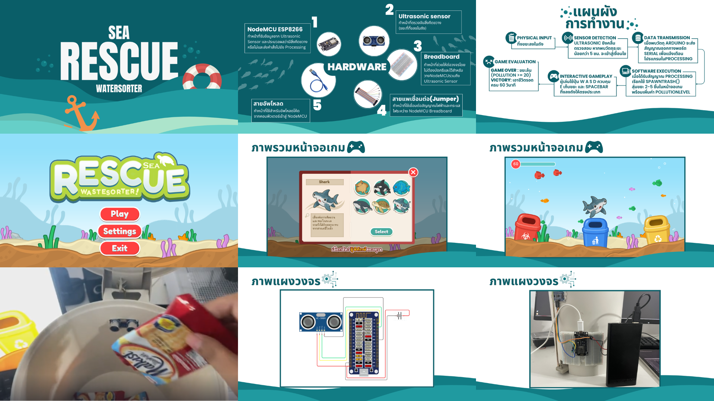

01
SEA RESCUE WATERSORTER
รายละเอียด: เป็นการสร้างถังขยะอัจฉริยะที่ทำงานร่วมกับวิดีโอเกม เมื่อผู้เล่นทิ้งขยะลงในถังขยะจริง เซนเซอร์จะตรวจจับและสุ่มสร้างขยะขึ้นมาในหน้าจอเกมใต้ทะเล ซึ่งผู้เล่นจะต้องบังคับสัตว์ทะเลเพื่อเก็บและแยกขยะให้ถูกต้องตามประเภทถังสีต่างๆ ภายใต้เวลาที่กำหนด
- ด้านฮาร์ดแวร์: ใช้บอร์ดไมโครคอนโทรลเลอร์ NodeMCU ESP8266 ทำงานร่วมกับเซนเซอร์ Ultrasonic (HC-SR04) เพื่อตรวจจับระยะการทิ้งขยะ
- ด้านซอฟต์แวร์: ใช้โปรแกรม Processing ในการสร้างภาพและควบคุมระบบของเกมทั้งหมด และใช้ระบบ Arduino ในการส่งสัญญาณจากเซนเซอร์ไปยังคอมพิวเตอร์
- เป้าหมาย: เพื่อแก้ไขปัญหาการทิ้งขยะไม่เป็นที่และลดผลกระทบจากไมโครพลาสติกต่อสัตว์ทะเล โดยเปลี่ยนการเรียนรู้เรื่องการแยกขยะที่น่าเบื่อให้กลายเป็นความสนุก เพื่อช่วยสร้างความตระหนักรู้และจิตสำนึกในการรักษ์โลกให้กับผู้เล่น